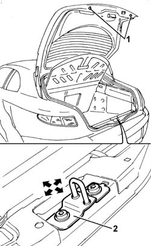
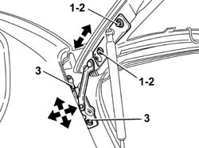

7015A14 TAILGATE - ADJUST CENTRING AND PROFILE - INCLUDES HINGE AND COMPARTMENT SEAL ADAPTATION
- Path
- Procedures > 70 FITTINGS > 7015 TAILGATE/FLAP > 7015A TAILGATE ASSEMBLY > 7015A14 TAILGATE - ADJUST CENTRING AND PROFILE - INCLUDES HINGE AND COMPARTMENT SEAL ADAPTATION
- Kind
- repair procedure (removal / refitting; the operation number is the code)
- Applies to
- all engines; all production periods
- Interactive page
- https://sloeber94.github.io/elrnDB-aGt/en/#/125001811
Applies to: all engines; all production periods
Lift the tailgate.
1. If necessary adjust the buffer blocks.
2. If necessary adjust the position of the lock striker.
Op. 7015A10 TAILGATE - ADJUST STRIKER AND ADAPT SEAL IF NECESSARY.

Applies to: all engines; all production periods
If the adjustments described above are insufficient, adjust the tailgate hinge position as described below.
1. Loosen the tailgate bolts and adjust the tailgate position, using the slotted holes on the hinges.
2. Tighten the bolts to the specified torque.
 | Fastening | Component | Ø | Value (daNm) |
|---|---|---|---|---|
2 | Bolt | TAILGATE HINGES | M6 | (To tailgate 12 |
If necessary, adjust the position of the lock striker (
Op. 7015A10 TAILGATE - ADJUST STRIKER AND ADAPT SEAL IF NECESSARY
).
If this adjustment is not sufficient, proceed as follows:
3. Loosen the bolts fixing the hinges to the bodyshell; adjust the position of the tailgate.
Tighten the bolts to the specified torque.
| Fastening | Component | Ø | Value (daNm) |
|---|---|---|---|---|
2 | Bolt | TAILGATE HINGES | M8 | (To bodyshell 17 |
Paint the head of the tailgate hinge fixing bolts.
If necessary, adjust the position of the lock striker (
Op. 7015A10 TAILGATE - ADJUST STRIKER AND ADAPT SEAL IF NECESSARY
).
